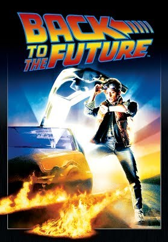
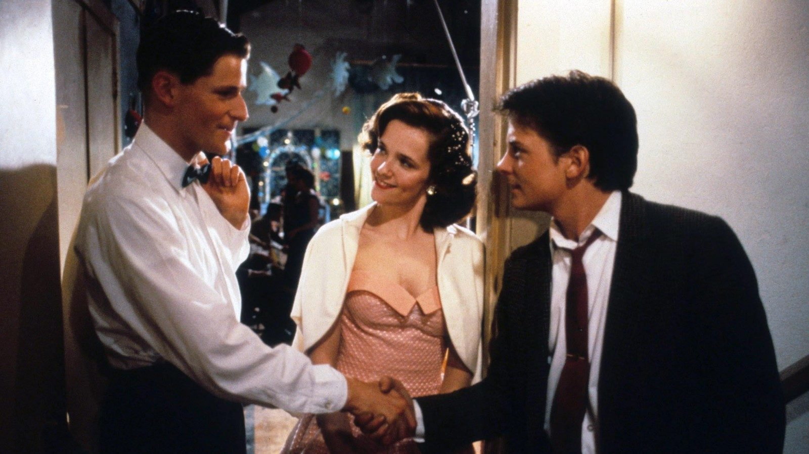
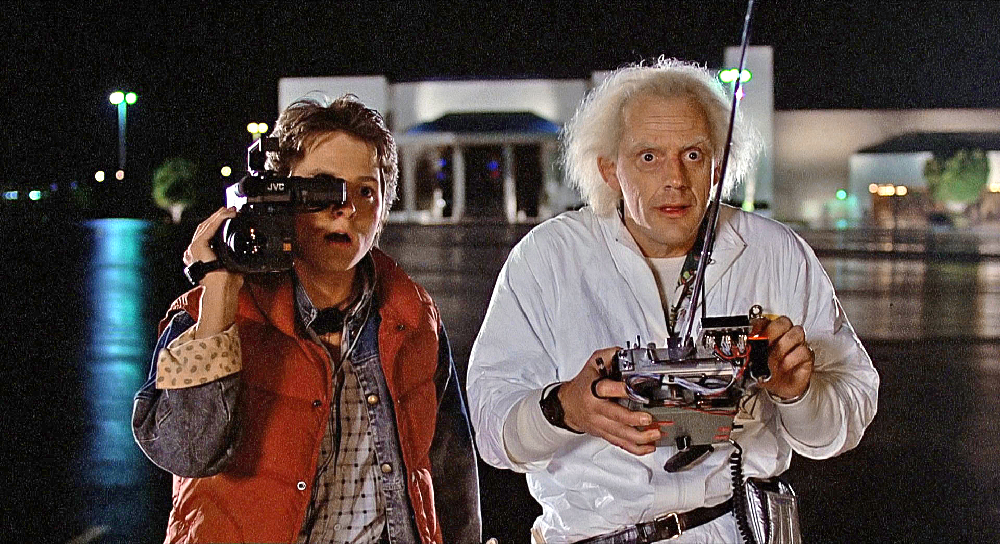
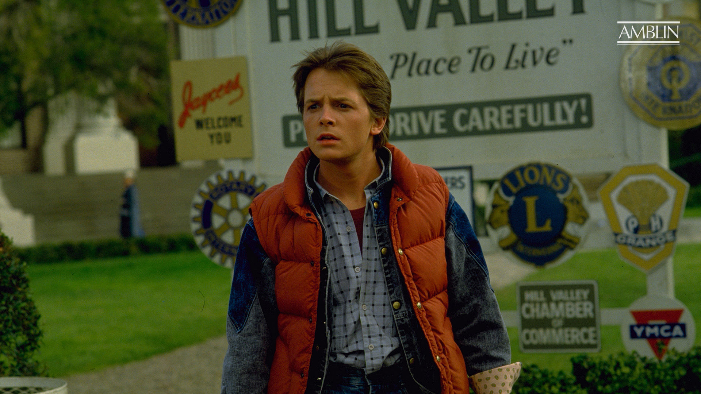
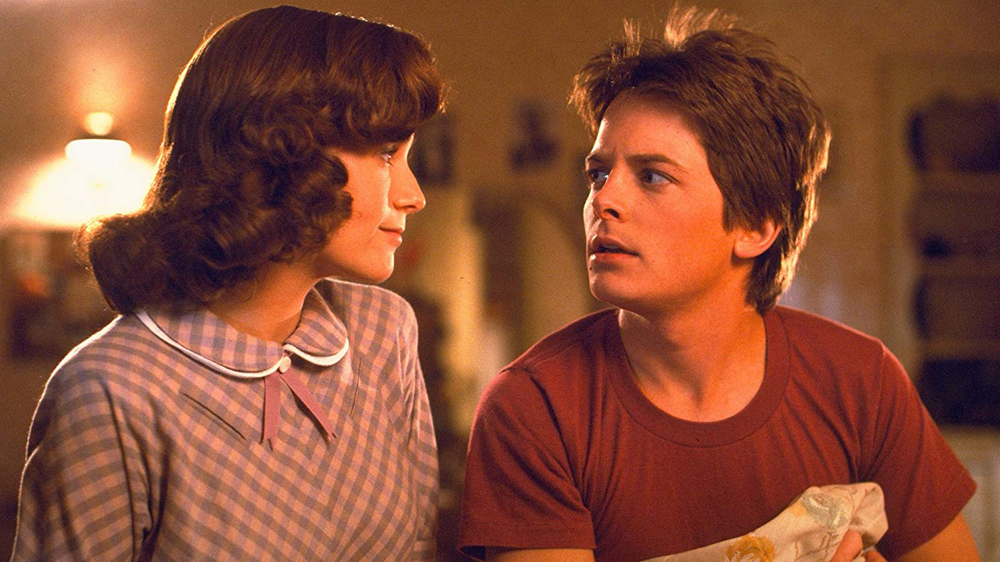
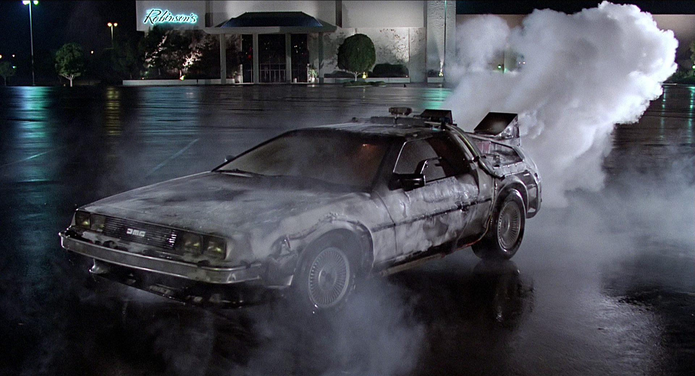
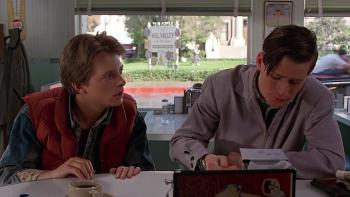
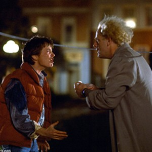
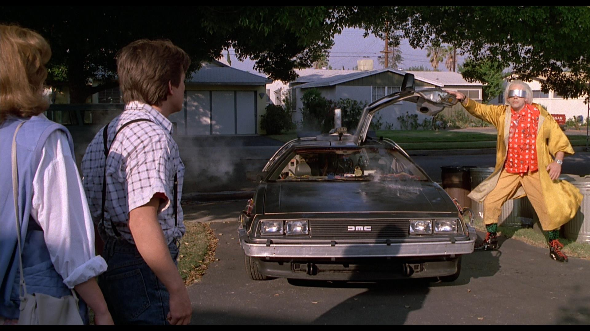

Back to the Future
Movie Overview
The first movie introduces Marty, a mediocre high school student with a mediocre family. His friend, Dr. Emmett Brown, is a middle-aged scientist who's been working on perfecting the art of time travel throughout his sad career. He finally comes up with the Flux Capacitor, the object which makes time travel possible! He transforms an old Delorean into the vessel for time travel, and accidentally sends Marty back to 1955. While there, Marty meets his young parents and starts to unravel the fabric of the space time continuum. He must figure out how to get his parents to fall in love so that he can be born in the future. Marty's final task includes having to get back to his home in 1985.
Movie Images








